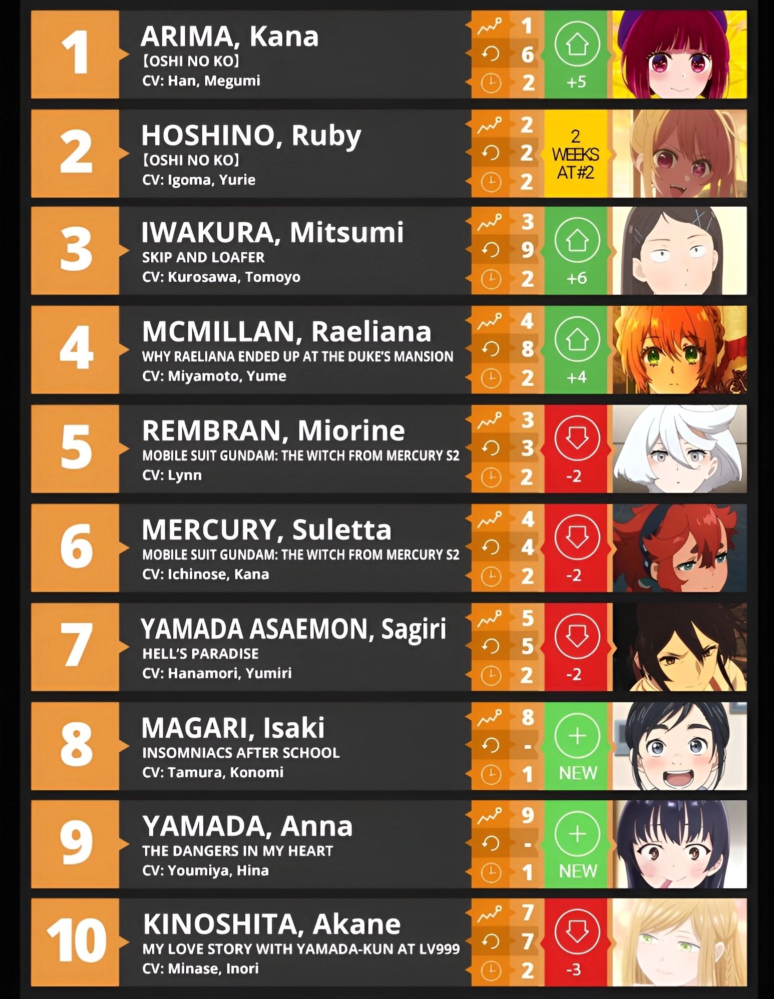
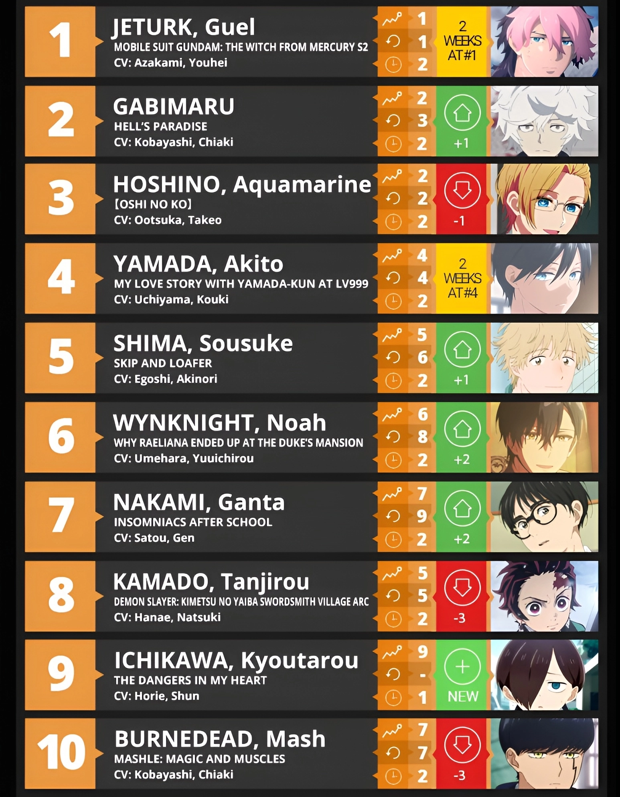

Estamos a la mitad de la temporada de Primavera-2023 (Abril-Junio), por lo que los fanáticos ya tienen suficiente conocimiento de las chicas protagonistas de las series actualmente en emisión. Entonces, ¿quiénes serán las chicas más populares de la temporada hasta la fecha? Revisemos los resultados ofrecidos por Anime Trending, el servicio más popular que realiza encuestas semanales de popularidad con decenas de miles de participaciones.
En su listado de la cuarta semana de emisión, podemos ver que Kana Arima y Ruby Hoshino de Oshi no Ko ocupan la primera posición, sorprendentemente seguidas por Mitsumi Iwakura de Skip to Loafer.

Y por si te preguntas cuál es el listado para los chicos de la temporada, podemos ver que hay un gran contraste entre las posiciones que tiene cada una de las franquicias actualmente en emisión:
Guel Jeturk de Mobile Suit Gundam: The Witch from Mercury toma la primera posición, seguido por Gabimaru de Jigokuraku: Hell’s Paradise y por Aqua Hoshino de Oshi no Ko.
Por otra parte, Akito Yamada de My Love Story with Yamada-kun at Lv999, Sousuke Shima de Skip to Loafer y Noah Wynknight de Why Raeliana Ended Up at the Duke’s Mansion completan el listado de las seis primeras posiciones, respectivamente.

¿Estás de acuerdo con los listados? ¿Aparecieron tus personajes favoritos? ¿Quién faltó aquí? Sin embargo, hay que recordar que la temporada actual apenas va a la mitad de su emisión, así que es bastante posible que estas posiciones varíen en las próximas semanas, dependiendo de como cambie la opinión de los espectadores con el desarrollo de cada una de las tramas.